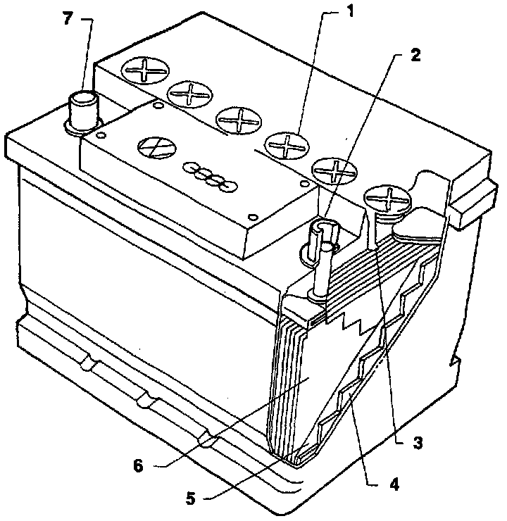

Servicing Battery
Battery:

1- Filler cap
2- Positive (B+) terminal
- Larger diameter than negative (-) terminal.
- Clean off any oxidation
3- Electrolyte level mark
- If necessary, fill to mark with distilled water.
4- Negative plate
- Color: metallic gray
5- Separator
- Insulator
6- Positive plate
- Color: dark brown
7- Negative (-) terminal
- Smaller diameter than positive (B+) terminal.
- Clean off any oxidation